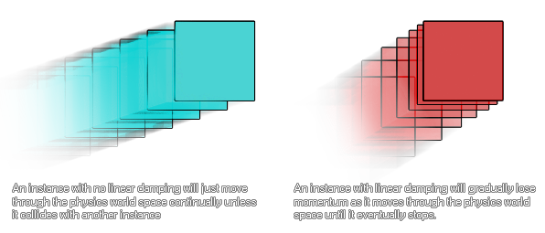

physics_fixture_set_linear_damping(fixture, damping)
| Argument | Description |
|---|---|
| fixture | the index of the fixture |
| damping | the damping of the fixture, usually between 0 and 1 |
Returns : N/A
Damping is used to reduce the physics world velocity of instances, and differs from friction in that friction only occurs when two instances with fixtures are in contact. Damping is also much cheaper to simulate than
friction, but please note that damping is not a replacement for friction; the two effects can, and should, be used together. Here is an image to illustrate damping:

Damping parameters should be between 0 and infinity, with 0 meaning no damping, and infinity meaning full damping. Normally you will use a damping value between 0 and 1.
physics_fixture_set_linear_damping(fix_Ball, 0.1);
The code above will set the linear damping of the fixture indexed in "fix_ball" to 0.1.